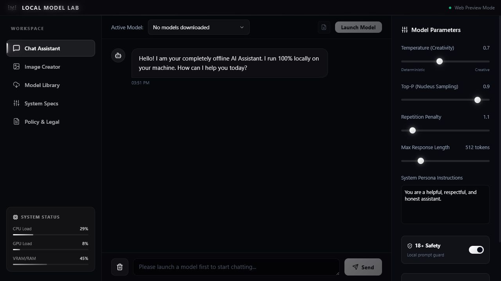

Private chat
Run supported GGUF language models with adjustable generation controls.
Private AI workspace for Windows
Run AI locally.
Chat with supported language models and create images on your own hardware. Your prompts and outputs stay under your control.
The workspace
Choose a compatible model, check its hardware fit, download it from its original source, and launch a local session without switching tools.

Run supported GGUF language models with adjustable generation controls.
Use compatible local Stable Diffusion and FLUX models with a detected backend.
Compare file size, license, source, and recommended hardware before downloading.
Open model and generation folders directly from the app.
Model library
The catalog links to independent model publishers. Every model remains subject to its own license and terms.
Lightweight basic chat.
638 MBBalanced everyday assistance.
1.9 GBReasoning, coding, and multilingual work.
2.3 GBLocal image creation on compatible hardware.
2.0 GBPrivacy
Local Model Lab does not provide cloud inference, analytics, advertising, or prompt collection. Internet access is used when you choose to download models, engines, or open external source pages.
Prompts and generated content are processed by local runtimes.
The app does not require registration or a subscription.
Models and generated images remain accessible in your Windows folders.
Local Model Lab for Windows
Official packages and checksums are published on the project Releases page.
FAQ
After a compatible model and required backend are downloaded, inference can run without an internet connection.
Lightweight text models can run on CPU. Image generation and larger models generally benefit from a compatible GPU.
The app stores models and generations in its Windows user-data folders and provides controls to open them.
Report reproducible problems through the official GitHub Issues page.